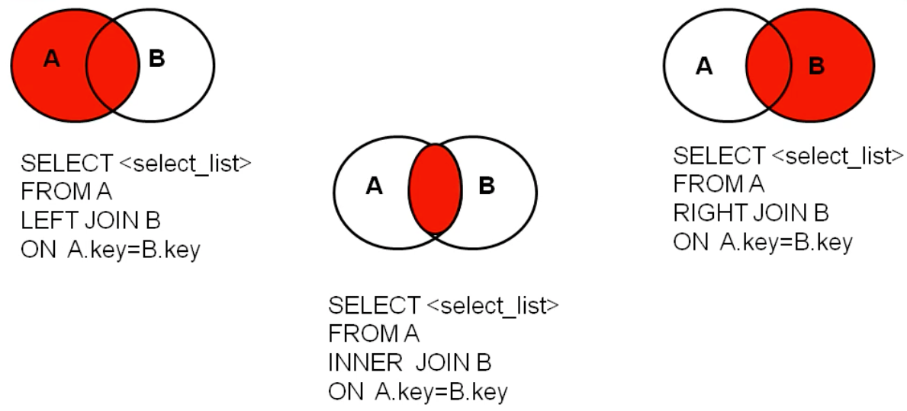
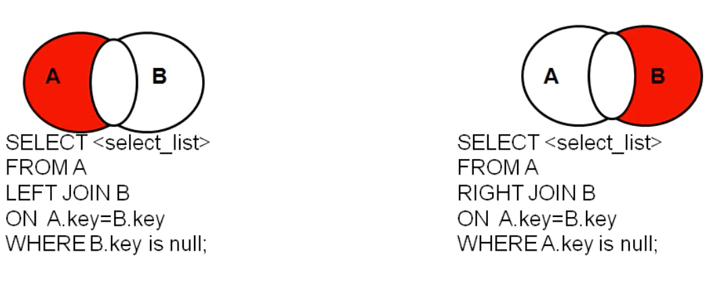

概念
数据库的好处
- 可以持久化数据到本地
- 结构化查询
sql
结构化查询语言,用于和数据库通信的语言,不是某个数据库软件特有的,而是几乎所有的主流数据库通用的语言
操作
常见命令
查看所有的数据库:
show databases;打开指定的库:
use 库名查看当前库的所有表:
show tables;查看其他库的所有表:
show tables from 库名;创建表
1
2
3
4create table 表名(
列名 列类型,
列名 列类型
);查看表结构:
desc 表名;查看服务器版本
- 登录进mysql:
select version() - 未登录:
mysql --version或mysql -V
- 登录进mysql:
语法规范介绍
- 不区分大小写;建议关键字大写,表名列名小写
- 每条命令用分号结尾
- 每条命令根据需要,可以进行缩进,或换行
- 注释
- 单行注释: #xxx
- 单行注释: – xxx
- 多行: /* xxx */
基础查询
- 查询常量:
-
SELECT 100; SELECT 'john'- 字符型和日期型的常量值必须用单引号引起来,数值型不需要
-
- 查询表达式:
SELECT 100%98;
- 查询函数:
SELECT VERSION(); - 起别名:
- 使用as
SELECT 100%98 AS result; - 使用空格
SELECT last_name 姓; - 别名有关键字要加双引号
SELECT last_name AS "out put";
- 使用as
- 去重:
SELECT DISTINCT dep_id from department;- 不允许
SELECT DISTINCT a, b from c;尽管语法无错误,但是没有去重效果
- 不允许
- +号:mysql中的加号只有一个功能: 运算符
SELECT 100+90;两个都为数值型,做加法运算SELECT '123'+90;其中一方为字符型,视图将字符型数值转换为数值型;如果转换成功,则继续做加法运算,如果转换失败,则将字符型数值转换成0SELECT 'john'+90;//结果为90SELECT null+10;//结果为null,只要一方为null,结果就为null
- 替换null:
IFNULL(字段名,替换值) - 判断是否为null:
ISNULL如果为null返回1,否则为0
条件查询
1 | select 查询列表 |
- 按条件表达式筛选
- 条件运算符: > < = != <> >= <=
- 按逻辑表达式筛选(用于连接条件表达式)
- 逻辑运算符: && || !
- Mysql中推荐: and or not
- 模糊查询
- like
- 一般和通配符搭配使用
- %: 任意多个字符,包含0个
- _: 任意单个字符
- 一般和通配符搭配使用
- between and
- in
- 类似于=和or的连接简化(所以不支持模糊搜索)
- 列表的值类型要一致或兼容
- is null
- = 或 <> 不能用于判断null
- is null 或 is not null可以用于判断null
- <=> 安全等于: 可以判断值和null
- like
案例
1 | SELECT * |
排序查询
1 | select 查询列表 |
order by 的位置一般放在查询语句的最后(除limit语句之外)
案例
按照员工年薪排序
1
2
3SELECT *, salary*12*(1+IFNULL(commision_pct,0)) 年薪
FROM employees
ORDER BY 年薪 DESC;按姓名长度排序
1
2
3SELECT LENGHT(last_name) 字节长度, last_name, salary
FROM employees
ORDER BY LENGTH(last_name) DESC;查询员工信息,要求先按照工资升序,再按员工编号降序[多个字段排序]
1
2
3SELECT *
FROM employees
ORDER BY salary ASC, employee_id DESC;
常见函数
概念
将一组逻辑语句封装方法体中,对外暴露方法名
好处:
- 隐藏了实现细节
- 提高代码的重用性
调用:select 函数名(实参列表) [from 表];
分类:
- 单行函数: concat,length,ifnull
- 分组函数: 统计使用,又称为统计函数
单行函数
字符函数
length
select LENGTH('张三丰');结果为9, 因为utf8下一个汉字3个字节concat 拼接
select CONCAT(last_name,'_',first_name) 姓名 from employees;upper,lower 大小写
select UPPER('jogn');substr, substring 返回子串
SELECT SUBSTR('李莫愁爱上了陆展元', 7 ) out_put; #陆展元SELECT SUBSTR('李莫愁爱上了陆展元', 1,3 ) out_put; #李莫愁instr 返回起始索引
SELECT INSTR('杨不悔爱上了殷六侠','殷六侠') AS out_put; #7trim
SELECT TRIM(' 张翠山 ') AS out_put;SELECT TRIM('a' FROM 'aaaaa张aaa翠aaa山aaaaaa') AS out_put;#张aaa翠aaa山lpad 用指定字符左填充
SELECT LPAD('殷素素',10,'*') AS out_put;# *******殷素素rpad 用指定字符右填充
SELECT RPAD('殷素素',12,'ab') AS out_put;# 殷素素ababababareplace 替换
SELECT REPLACE('张无忌爱上了周芷若','周芷若','赵敏') AS out_put;
数学函数
round 四舍五入
SELECT ROUND(-1.65) # -2SELECT ROUND(-1.657,2) # -1.66保留两位ceil 向上取整,返回>=该参数的最小整数
floor 向下取整,返回<=该参数的最大整数
truncate 截断
SELECT TRUNCATE(1.69999,1) # 1.6mod 取余
MOD(a,b): a - a / b * b
MOD(-10,-3): -10 - (-10)/(-3) * (-3) = -1
被除数为正,结果为正
SELECT MOD(10,3); #1SELECT MOD(10,-3); #1
日期函数
now 返回当前系统日期+时间
SELECT NOW();curdate 返回当前系统日期,不包含时间
SELECT CURDATE();curtime 返回当前时间,不包含日期
SELECT CURTIME();可以获取指定的部分,年月日时分秒
SELECT YEAR(NOW()) 年;SELECT MONTHNAME(NOT()) 月;str_to_date 将日期格式的字符串转换成指定格式的日期
SELECT STR_TO_DATE('1998-3-2','%Y-%c-%d') AS out_put;# 1998-03-02SELECT * FROM employees WHERE hiredate = STR_TO_DATE('4-3 1992','%c-%d %Y');指定输入格式date_format 将日期转换成字符
SELECT DATE_FORMAR(NOW(), '%y年%m月%d日') AS out_put;返回两个日期相差的天数:
DATEDIFF以英文形式返回月:
MONTHNAME
其他函数
1 | SELECT VERSION(); |
流程控制函数
if
SELECT IF(10>5,'大','小');case
使用一: switch case的效果
1
2
3
4
5
6case 要判断的字段或表达式
when 常量1 then 要显示的值1或语句1;
when 常量2 then 要显示的值2或语句2;
...
else 要显示的值n或语句n;
end使用二: 多重if
1
2
3
4
5
6case
when 条件1 then 要显示的值1或语句1
when 条件2 then 要显示的值2或语句2
...
else 要显示的值n或语句n;
end示例:
1
2
3
4
5
6
7
8SELECT salary,
CASE
WHEN salary>20000 THEN 'A'
WHEN salary>15000 THEN 'B'
WHEN salary>10000 THEN 'C'
ELSE 'D'
END AS 工资级别
FROM employees;
分组函数
用作统计使用,又称为聚合函数或统计函数或组函数
和分组函数一通查询的字段,要求是GROUP BY后的字段
分类
sum求和,avg平均值,max最大值,min最小值,count计算个数
参数支持类型
sum, avg一般用于处理数值型
max, min, count可以处理任何类型
是否忽略null
以上函数都忽略了null值
和distinct搭配
1 | SELECT SUM(DISTINCT salary), SUM(salary) FROM employees; |
count详细介绍
1 | SELECT COUNT(*) FROM employees; # 统计行数 |
效率:
MYISAM存储引擎下, COUNT(*) 效率最高
INNODB存储引擎下, COUNT(*) 和 COUNT(1) c差不多,比COUNT(‘字段’) 高
分组查询
语法
1 | select 分组函数, 列(要求出现在group by后) |
注意: 查询列表必须特殊,要求是分组函数和group by后出现的字段
特点
分组查询的筛选条件分为两类
- 分组前筛选
- 数据源: 原始表
- 位置: group by子句前
- 关键字: where
- 分组后筛选
- 数据源: 分组后的结果集
- 位置: group by子句后
- 关键字: having
分组函数做条件肯定放在having中
能用分组前筛选的优先使用分组前筛选
group支持单个字段分组,多个字段分组(用逗号隔开,无顺序),表达式或函数(使用少)
排序要放在group by之后
案例
查询每个工种的最高工资
1
2
3select max(salary), job_id
from employees
group by job_id;查询每个位置上部门个数
1
2
3select count(*), location_id
from employees
group by location_id;查询邮箱中包含a字符的,每个部门的平均工资
分组前的筛选使用where
1
2
3
4select avg(salary), department_id
from employees
where email like '%a%'
group by department_id;查询哪个部门的员工个数>2
分组后的筛选使用having
1
2
3
4
5
6# 查询每个部门的员工个数
# 根据1的结果筛选,查询>2的
select count(*), department_id
from employees
group by department_id
having count(*)>2;查询每个工种有奖金的员工的最高工资>12000的工种编号和最高工资
1
2
3
4
5
6
7
8
9
10
11# 查询每个工种有奖金的员工的最高工资
select max(salary),job_id
from employees
where commission_pct is not null
group by job_id;
# 根据结果筛选最高工资>12000
select max(salary),job_id
from employees
where commission_pct is not null
group by job_id
having max(salary)>12000;查询每个部门每个工种的员工的平均工资
按多个字段分组
1
2
3select avg(salary), department_id, job_id
from employees
group by job_id,department_id;查询每个部门每个工种的员工的平均工资,并且按高低排序
排序
1
2
3
4
5select avg(salary),department_id,job_id
from employees
group by job_id,department_id
having avg(salary)>10000
order by avg(salary) desc;
连接查询
概念
笛卡尔乘积
现象: 表1有m行,表2有n行,结果为m*n行
原因: 没有有效的连接条件
如何避免: 添加有效的连接条件
分类
- 按年代分类(mysql)
- sql92标准: 仅支持内连接
- sql99标准[推荐]: 支持内连接+外连接(左外和右外)+交叉连接
- 按功能分类
- 内连接
- 等值连接
- 非等值连接
- 自连接
- 外连接
- 左外连接
- 右外连接
- 全外连接
- 交叉连接
- 内连接
sql92标准
内连接
等值连接
案例: 查询女神名和对应的男神名
1 | select name,boyname |
- 给表起别名
- 提高语句简洁度
- 区分多个重名字段
- 起了别名,就要用别名限定
- 两个表的顺序可以调换
- 可以加筛选,分组,排序等
非等值连接
案例: 查询员工工资级别
1 | select salary,grade_level |
自连接
要求一张表中包含了所需的信息,把自己当成多张表使用
案例: 员工名和上级的名称
1 | select e.employee_id, e.lastname, m.employee_id, m.last_name |
sql99标准
语法
1 | select 查询列表 |
连接类型
- 内连接: inner
- 外连接
- 左外: left [outer]
- 右外: right (outer)
- 全外: full (outer)
- 交叉连接: cross
内连接
语法
1 | select 查询列表 |
特点
- 可以添加排序,分组,筛选
- inner可以省略
- 筛选条件放在where后面,连接条件放在on后面.提高分离性,便于阅读
- inner join连接和sql92语法中的等值连接效果一样
分类
等值连接
查询员工名,部门名
1 | select last_name,department_name |
查询员工名,部门名,工种名,按部门名降序(三表)
1 | select last_name,department_name,job_title |
非等值连接
查询员工工资级别
1 | select salary,grade_level |
自连接
案例: 员工名和上级的名称
1 | select e.employee_id, e.lastname, m.employee_id, m.last_name |
外连接
用于查询,一个表中有,另一个表中没有的记录
用于查询除了交集部分的剩余不匹配的行
特点
- 外连接的查询结果为主表中的所有记录
- 如果从表中有和它相匹配的,则显示匹配的值
- 如果从表中没有和它匹配的,则显示null
- 外连接查询结果=内连接结果+主表中有而从表中没有的记录
- 左外连接, left join左边的是主表
- 右外连接, right join右边的是主表
- 左外和右外交换两个表的顺序,可以实现相同的结果
- 全外连接=内连接的结果+表1中有表2没有的+表2中有但表1中没有的
左外连接
1 | # 主表b |
右外连接
1 | # 主表b |
全外连接
mysql不支持
交叉连接
其实就是使用99语法来实现笛卡尔乘积
1 | select b.*,bo.* |
总结



子查询
出现在其他语句中的select语句,称为子查询或内查询
外部的查询语句,称为主查询或外查询
分类:
- 子查询出现的位置:
- select后面
- 仅支持标量子查询
- from后面
- 支持表子查询
- where或having后面(重点)
- 标量子查询
- 列子查询
- 行子查询
- exists后面(相关子查询)
- 表子查询
- select后面
- 按结果集的行列数:
- 标量子查询(结果集只有一行一列)
- 列子查询(结果集只有一列多行)
- 行子查询(结果集有一行多列)
- 表子查询(结果集一般为多行多列)
where或having后面
- 标量子查询(单行子查询)
- 列子查询(多行子查询)
- 行子查询(一行多列)
特点
- 子查询放在小括号内
- 子查询一般放在条件的右侧
- 标量子查询,一般搭配着单行操作符使用 > < >= <= = <>
- 列子查询,一般搭配着多行操作符使用 in, any/some, all
- a > any(10,20,30) a大于任何一个就可以匹配(相当min)
- a > all(10,20,30) a大于所有的(相当max)
- 子查询的执行优先于主查询执行
标量子查询
谁的工资比Abel高
1
2
3
4
5
6
7
8
9select *
from employees
where salary>(
select salary
from employees
where last_name = 'Abel'
);返回job_id与141号员工相同, salary比143号员工多的员工 姓名,job_id,工资
1
2
3
4
5
6
7
8
9
10
11
12
13
14
15
16
17
18
19
20# 查询141号员工的job_id
select job_id
from employees
where employee_id = 141
# 查询143号员工的salary
select salary
from employees
where employee_id = 143
# 查询员工的姓名, job_id 和工资
select last_name,job_id,salary
from employees
where job_id = (
select job_id
from employees
where employee_id = 141
) and salary > (
select salary
from employees
where employee_id = 143
);返回公司工资最少的员工的last_name,job_id和salary
1
2
3
4
5
6select last_name, job_id, salary
from employees
where salary = (
select min(salary)
from employees
);查询最低工资大于50号部门最低工资的部门id和其最低工资
1
2
3
4
5
6
7
8
9
10
11
12
13
14
15
16
17# 查询50号部门的最低工资
select min(salary)
from employees
where deplartment_id = 50;
# 查询每个部门的最低工资
select min(salary), department_id
from employees
group by department_id
# 满足min(salary) > 第一步
select min(salary), department_id
from employees
group by department_id
having min(salary) > (
select min(salary)
from employees
where deplartment_id = 50;
)
列子查询
查询location_id是1400或1700的部门中的所有员工姓名
1
2
3
4
5
6
7select last_name
from employees
where department_id in (
select distinct department_id
from departments
where location_id in (1400,1700)
);
行子查询
查询员工编号最小并且工资最高的员工信息
1
2
3
4
5
6
7
8
9
10
11
12
13
14
15
16
17
18
19# 查询最小的员工编号
select min(employee_id) from employees
# 查询最高工资
select max(salary) from employees
# 查询员工信息
select *
from employees
where employee_id = (
select min(employee_id) from employees
)and salary = (
select max(salary) from employees
)
# 2.0
select *
from employees
where (employee_id,salary)=(
select min(employee_id),max(salary)
from employees
);
select后面
仅仅支持标量子查询
查询每个部门的员工个数
1
2
3
4
5
6select d.*,(
select count(*)
from employees e
where e.department_id = d.`department_id` # 查询某一条的时候,找对应该条的
) 个数
from departments d;查询员工号=102的部门名
1
2
3
4
5select (
select department_name
from departments d
where
)
from后面
将子查询结果充当一张表,要求必须起别名
查询每个部门的平均工资的工资等级
1 | # 查询每个部门的平均工资 |
exist后面(相关子查询)
语法
1 | exists (完整的查询语句) |
查询有员工的部门名
1
2
3
4
5
6
7
8
9
10
11
12
13
14
15
16# exist
select department_name
from departments d
where exists(
select *
from employees e
where d.`department_id`=e.`department_id`
);
#in
select department_name
from departments d
where d.`department_id` in (
select department_id
from employees
)查询没有女朋友的男生信息
1
2
3
4
5
6
7
8
9
10
11
12
13
14
15
16# in
select bo.*
from boys bo
where bo.id not in (
select boyfriend_id
from beauty
)
# exist
select bo.*
from boys bo
where not exists(
select boyfriend_id
from beauty b
where bo.`id`=b.`boyfriend_id`
);
分页查询
语法
1 | select 查询列表 |
特点
limit语句放在查询语句的最后(从执行和语法都是最后)
公式
要显示的页数 page, 每页条目数 size
1
2
3select 查询列表
from 表
limit (page-1)*size, size;
案例
查询前5条
1
2select * from employees limit 0,5;
select * from employees limit 5;查询第11-25
1
select * from employees limit 10,15;
查询的执行顺序
1 | select 查询列表 #7 |
联合查询
将多条查询语句的结果合并成一个结果
语法
1 | 查询语句1 |
应用场景
当查询的结果来自多个表,并且多个表之间没有直接的连接关系,单查询的信息一致的时候
注意: union会去重
特点
- 要求多条查询语句的查询烈属是一致的
- 要求多条查询语句的每一列的类型和顺序最好一致
union关键字默认去重,如果使用union all可以包含重复项
DML语言
插入语句
语法
1 | # 方式一 |
特点
- 插入值的类型要与列的类型一致或兼容
- 不可以为null的列必须插入值
- 列的顺序可以调换
- 列数和值的个数必须一致
- 可以省略列名,默认所有列,而且列的顺序和表中列的顺序一致
两种方式
方式一支持插入多行
方式一支持子查询
1
2insert into beauty(id,name,phone)
select 26,'xiaoming','123';
修改语句
修改单表的记录
1
2
3update 表名
set 列=新值,列=新值
where 筛选条件;update beauty set phone = '13899992222' where name like '唐%';修改多表的记录
1
2
3
4
5
6
7
8
9
10
11
12
13# sql92
update 表1 别名1, 表2 别名2
set 列=值,...
where 连接条件
and 筛选条件;
# sql99
update 表1 别名
inner|left|right join 表2 别名
on 连接条件
set 列=值,...
where 连接条件
and 筛选条件;1
2
3
4update boys bo
inner join beauty b on bo.`id`=b.`boyfriend_id`
set b.`phone`='114'
where bo.`boyName`='张无忌'
删除语句
语法
1 | # 方式一: delete |
区别(面试重点)
delete 可以加where条件,truncate不添加
truncate要删除,效率高一点
加入要删除的表中有自增长列
如果用delete删除后,再插入数据,自增长列的值从断点开始
如果用truncate删除,再插入数据,自增长的列的值从1开始
truncate删除没有返回值,delete删除有返回值
truncate删除不能回滚,delete删除可以回滚
案例
删除张无忌女朋友的信息
1 | delete b |
DDL语言
概念
数据定义语言
库和表的管理
- 库的管理
- 创建,修改,删除
- 表的管理
- 创建修改删除
创建: create
修改: alter
删除: drop
库的管理
库的创建
1 | create database [if not exists] 库名; |
库的修改
1 | rename database books to 新库名; |
库的删除
1 | drop database if exists books; |
表的管理
表的创建
1 | create table 表名( |
示例
1 | create table book( |
表的修改
1 | ALTER TABLE 表明 add|drop|modify|change column 列名 [列类型] [约束]; |
修改列名
1 | alter table book change column pulishdate pubDate datetime; # 要加类型在后面 |
修改列的类型或约束
1 | alter table book modify column pubdate timestamp; |
添加列
1 | ALTER TABLE author ADD COLUMN annual DOUBLE; |
删除列
1 | ALTER TABLE author DROP COLUMN annual; |
修改表名
1 | ALTER TABLE author RENAME TO book_author; |
表的删除
1 | DROP TABLE IF EXISTS book_author; |
表的复制
1 | INSERT INTO author VALUES(1,'村上春树','日本'), |
仅仅复制表的结构
1
CREATE TABLE copy LIKE author;
复制表的结构外加数据
1
2CREATE TABLE copy2
SELECT * FROM author;复制部分数据
1
2
3
4CREATE TABLE copy3
SELECT id,au_name
FROM author
WHERE nation='中国';仅仅复制某些字段,不复制数据
1
2
3
4CREATE TABLE copy4
SELECT id,au_name
FROM author
where 0;
数据类型
分类
- 数值型
- 整数
- 小数
- 定点数
- 浮点数
- 字符型
- 较短的文本: char, varchar
- 较长的文本: text, blob(较长的二进制数据)
- 日期型
整型
| 整数类型 | 字节 | 范围 |
|---|---|---|
| tinyint | 1 | 无符号-128 |
| smallint | 2 | 有符号-32768 |
| mediumint | 3 | 不用记住 |
| int, integer | 4 | -2147483648~2147483647 (装逼可以记住) |
| bigint | 8 | 不用记住 |
特点
如果不设置无符号还是有符号,默认是有符号,如果想设置无符号,需要添加unsigned关键字
1
2
3
4
5CREATE TABLE tab_int(
t1 INT,
t2 INT UNSIGNED,
t3 INT(7) ZEROFILL # 指定长度,用0填充,包含UNSIGNED
)如果插入的数值超出了整型的范围,会报out of range异常,并且插入临界值
如果不设置长度,会有默认的长度
长度代表了显示的最大宽度,如果不够在左边填充,但必须搭配zerofill使用
小数
- 浮点型
- float(M,D)
- double(M,D)
- 定点型
- dec(M,D)
- decimal(M,D)
特点
- M和D:
- M: 整数部位+小数部位
- D: 小数部位
- 超出插入临界值
- M和D都可以省略. 如果是decimal,则M默认为10,D默认为0;如果是float和double,则会根据插入的数值和精度来决定精度
- 定点型精度较高,如果要求插入的数值的精度较高,如货币运算等,考虑使用
原则
所选择的类型越简单越好,能保存数值的类型越小越好
字符型
- 较短的文本: char, varchar
- 较长的文本: text, blob(较大的二进制)
特点
| 写法 | M的意思 | 特点 | 空间耗费 | 效率 | |
|---|---|---|---|---|---|
| char | char(M) | 最大的字符数,可以省略,默认1 | 固定长度的字符 | 比较耗费 | 高 |
| varchar | varchar(M) | 最大的字符数,不可以省略 | 可变长度的字符 | 比较节省 | 低 |
binary和varbinary类型
类似于char和varchar,不同的是它们包含二进制字符串而不包含非二进制字符串
enum
不区分大小写
1 | create table tab_char( |
set
和enum类似,里面可以保存0-64个成员
和enum类型最大的区别就是: set类型可以一次选取多个成员,而enum只能选一个
根据成员个数不同,存储所占的字节也不同
| 成员数 | 字节数 |
|---|---|
| 1-8 | 1 |
| 9-16 | 2 |
| 17-24 | 3 |
| 25-32 | 4 |
| 33-64 | 8 |
1 | create table tab_set( |
日期型
分类
- date 只保存日期
- time 只保存时间
- year 只保存年
- datetime 保存日期+时间
- timestamp 保存日期+时间
特点
| 字节 | 范围 | 时区影响 | |
|---|---|---|---|
| datetime | 8 | 1000-9999 | 不受 |
| timestamp | 4 | 1970-2038 | 受 |
约束
一种限制,用于限制表中的数据,为了保证表中的数据的准确和可靠性
六大约束
- NOT NULL: 非空,用于保证该字段的值不能为空
- 比如姓名学号等
- DEFAULT: 默认,用于保证该字段有默认值
- 比如性别
- PRIMARY KEY: 主键,用于保证该字段的值具有唯一性,并且非空
- 比如编号
- UNIQUE: 唯一,用于保证该字段的值具有唯一性,可以为空
- 比如座位号
- CHECK: 检查约束[mysql中不支持]
- 比如要求年龄段只能为18-60
- FOREIGN KEY: 外键,用于限制两个表的关系,用于保证该字段的值必须来自于主表的关联列的值
- 在从表中添加外键约束,用于引用主表中某列的值
- 比如员工表的部门编号
- 要求:
- 在从表设置外键关联
- 从表的外键列的类型和主表的关联列的类型要求一致或兼容,名称无要求
- 主表的关联列必须是一个key(是主键或唯一)
- 插入数据时,先插入主表,再插入从表
- 删除数据时,先删除从表,再删除主表
主键和唯一的对比:
- 主键
- 唯一
- 不允许为空
- 一表只能有一个
- 允许组合,但不推荐
primary key(a,b)
- 唯一
- 唯一
- 可以为空
- 一表可以有多个
- 允许组合,但不推荐
添加约束的时机: 创建表或修改表时
约束的添加分类
- 列级约束
- 位置: 列的后面.直接在字段名和类型后面追加约束类型即可
- 六大约束语法上都支持, 但外键约束没有效果(check也没)
- 表级约束
- 位置: 所有列的下面
- 除了非空,默认,其他都支持
1 | CREATE TABLE 表名( |
添加约束
创建表时添加
添加列级
1 | use students; |
添加表级
语法
1 | # 在各个字段最下面 |
1 | create table stuinfo( |
通用写法
1 | create table if not exists stuinfo( |
修改表时添加约束
语法
1 | # 1. 添加列级约束 |
示例
添加非空约束
ALTER TABLE stuinfo MODIFY COLUMN stuname VARCHAR(20) NOT NULL;添加主键
列级
ALTER TABLE stuinfo MODIFY COLUMN id INT PRIMARY KEY;表级
ALTER TABLE stuinfo ADD UNIQUE(seat);
添加外键
ALTER TABLE stuinfo ADD CONSTRAINT fk_stuinfo_major FOREIGN KEY(majorId) REFERENCES major(id) ;
修改表时删除约束
删除非空约束
ALTER TABLE stuinfo MODIFY COLUMN stuname VARCHAR(20) NULL;删除默认约束
ALTER TABLE stuinfo MODIFY COLUMN age INT;删除主键
ALTER TABLE stuinfo DROP PRIMARY KEY;删除唯一
ALTER TABLE stuinfo DROP INDEX seat;删除外键
ALTER TABLE stuinfo DROP FOREIGN KEY fk_stuinfo_major;
示例
向表中id列加PRIMARY KEY约束
1
2
3
4# 列级约束不可以起名
ALTER TABLE emp2 MODIFY COLUMN id INT PRIMARY KEY;
# 表级约束可以起名
ALTER TABLE emp2 ADD constrain my_emp_id_pk PRIMARY KEY(id);向表emp2中添加列dept_id,并在其中定义FOREIGN KEY约束,与之相关联的列是dept2表中的id列
1
2ALTER TABLE emp2 ADD COLUMN dept_id INT;
ALTER TABLE emp2 ADD CONSTRAINT fk_emp2_dept2 FOREIGN KEY(dept_id) REFERENCES dept2(id);
标识列
又称为自增长列
可以不用手动的插入值,系统提供默认的序列值
特点
- 标识列不一定需要和主键搭配,但要求是个key
- 一个表至多一个标识列!
- 标识列的类型只能是数值型
创建表时设置标识列
1 | create table tab_identity( |
使用指令SHOW VARIABLES LIKE '%auto_increment%';可以看到有两个参数
- auto_increment_increment 步长
- 修改:
set auto_increment_increment=3;
- 修改:
- auto_increment_offset 偏移量
起始值更改: 在某个地方手动插入一个值
修改表时设置标识列
ALTER TABLE tab_identity MODIFY COLUMN id INT PRIMARY KEY AUTO_INCREMENT;
修改表时删除标识列
ALTER TABLE tab_identity MODIFY COLUMN id INT;
事务
事务: 一个或一组sql语句组成一个执行单元,这个执行单元要么全部执行,要么全部不执行.
ACID
- 原子性 Atomicity
- 事务是一个不可分割的工作单位,事务中的操作要么都发生,要么都不发生
- 一致性 Consistency
- 事务必须使数据库从一个一致性状态变换到另一个一致性状态
- 隔离性 Isolation
- 事务的隔离性是指一个事务的执行不能被其他事务干扰.即一个事务内部的操作及使用的数据对并发的其他事务是隔离的,并发执行的各个事务之间不能互相干扰
- 持久性 Durability
- 指一个事务一旦被提交,它对数据库中数据的改变就是永久性的
事务的创建
- 隐式事务
- 事务没有明显的开始和结束的标记
- 比如insert,update,delete语句
- 显式事务
- 事务具有明显的开启和结束的标记
- 前提: 必须先设置自动提交功能为禁用
set autocommit=0;
步骤
1 | # 1. 开启事务 |
数据库隔离级别
对于同时运行多个事务,当这些事务访问数据库中相同的数据时,如果没有采取必要的隔离措施,就会导致各种并发问题
- 脏读
- 对于两个事务T1,T2,T1读取了已经被T2更新但是还没有被提交的字段. 如果T2回滚,T1读取的内容就是临时并且无效的(与幻读相比针对的是更新)
- 不可重复读
- 对于两个事务T1,T2,T1读取了一个字段,然后T2更新了该字段. 之后T1再次读取同一个字段,值会不同
- 幻读
- 对于两个事务T1,T2. T1从一个表中读取了一个字段,然后T2在该表中插入了一些新的行.之后如果T1再次读取同一个表,就会多出几行(与脏读相比针对的是插入和删除)
所以,数据库系统必须具有隔离并发运行各个事务的能力,使它们不会相互影响,避免引发各种并发问题
隔离级别
一个事务与其他事务隔离的程度称为隔离级别.
数据库规定了各种事务隔离级别,不同隔离级别对应不同的干扰程度.
隔离级别越高,数据一致性就越好,但并发性越弱
数据库提供了四种隔离级别
| 隔离级别 | 描述 |
|---|---|
| READ UNCOMMITTED(读未提交数据) | 允许事务读取未被其他事务提交的变更. 脏读,不可重复读,幻读的问题都会出现 |
| READ COMMITTED(读已提交数据) | 只允许事务读取已经被其他事务提交的变更,可以避免脏读,但不可重复读和幻读问题仍然可能出现 |
| REPEATABLE READ(可重复读) | 确保事务可以多次从一个字段中读取相同的值.但在这个事务持续期间,禁止其他事务对这个字段进行更新.可以避免脏读和不可重复读,但是幻读的问题依然存在 |
| SERIALIZABLE(串行化) | 确保事务可以从一个表中读取相同的行,在这个事务持续期间,禁止其他事务对该表执行插入,更新和删除操作.所有并发问题都能避免,但是性能十分低下 |
- oracle支持两种: READ COMMITED(默认), SERIALIZABLE.
- mysql支持四种: 默认为REPEATABLE READ
查看数据库隔离级别
mysql8+: select @@transaction_isolation;
mysql5.x: select @@tx_isolation;
设置隔离级别
当前:set session transaction isolation level read uncommitted;
全局:set global transaction isolation level read committed;
savepoint
设置节点
1 | set autocommit=0; |
删除有外键关联的主表数据
级联删除
1 | alter table stuinfo add constraint fk_stu_major foreign key(majorId) references major(id) |
级联置空
1 | alter table stuinfo add constraint fk_stu_major foreign key(majorId) references major(id) |
变量
- 系统变量
- 全局变量 global
- 作用域: 服务器每次启动将为所有的全局变量赋初始值,针对于所有的会话(连接)有效,但不能跨重启
- 会话变量 session
- 作用域: 仅仅针对于当前会话有效
- 全局变量 global
- 自定义变量
- 用户变量
- 作用域: 针对于当前会话(连接)有效,同于会话变量的作用域
- 定义和使用的位置: 会话中任何地方
- 语法: 必须加@
- 局部变量
- 作用域: 仅仅在定义它的begin end中有效
- 定义和使用的位置: 只能在BEGIN END中,且为一句话
- 语法: 一般不用加@
- 用户变量
系统变量
由系统提供,不是用户自定义,属于服务器层面
如果是全局级别,加global, 会话变量不用加,默认.
查看所有的系统变量
1 | show global|[session] variables; # session可以不写,为默认 |
查看满足条件的部分系统变量
1 | show global|[session] variables like '%char%'; |
查看指定的某个系统变量的值
1 | select @@global|[session].系统变量名 # 有个. |
为某个系统变量赋值
1 | # 1. |
自定义变量
使用步骤:
- 声明
- 赋值
- 使用(查看,比较,运算等)
用户变量
声明并初始化
赋值操作符: = 或:= (因为=类似比较所以增加了:=; set都可以,select只能后者)
1
2
3set @用户变量名=值;
set @用户变量名:=值;
select @用户变量名:=值;赋值(更新用户变量的值)
1
2
3
4
5
6
7
8
9
10
11
12
13
14# 方式一: set或select
set @用户变量名=值;
set @用户变量名:=值;
select @用户变量名:=值;
# 方式二: 通过select into
select 字段 into 变量名 from 表;
# 示例
set @name='john';
set @name=100;
set @count=1;
select count(*) into @count from employees;使用(查看用户变量的值)
1
select @用户变量名;
局部变量
声明
1
2declare 变量名 类型;
declare 变量名 类型 default 值;赋值
1
2
3
4
5
6
7# 方式一: set或select
set 局部变量名=值;
set 局部变量名:=值;
select @局部变量名:=值;
# 方式二: 通过select into
select 字段 into 局部变量名 from 表;使用
1
select @局部变量名;
示例
1 | # 用户变量 |
存储过程的介绍
存储过程和函数,类似于java中的方法
好处:
- 提高代码重用性
- 简化操作
存储过程
一组预先编译好的SQL语句的集合,理解成批处理语句
- 提高代码重用性
- 简化操作
- 减少了编译次数并且减少了和数据库服务器的连接次数,提高了效率
创建语法
1 | create procedure 存储过程名(参数列表) |
注意:
参数列表包含三部分: 参数模式,参数名,参数类型.
IN stuname VARCHAR(20)- 参数模式:
- IN: 该参数可以作为输入, 也就是说该参数需要调用方传入值
- OUT: 该参数可以作为输出, 也就是该参数可以作为返回值
- INOUT: 该参数既可以作为输入也可以作为输出
- 参数模式:
如果存储过程体仅仅只有一句话,BEGIN END可以省略
存储过程体中的每一条SQL语句的结尾要求必须加分号
存储过程的结尾(分号)可以使用
DELIMITER重新设置语法:
1
2
3
4DELIMITER 结束标记
# 示例
DELIMITER $
调用语法
CALL 存储过程名(实参列表);
示例
1 | # 1. 空参列表 |
删除语法
DROP PROCEDURE 存储过程名
只能一次删一个
查看
DESC myp2; 是错误的
SHOW CREATE PROCEDURE myp2;
修改
不能修改,只能删除重建
函数
一组预先编译好的SQL语句的集合,理解成批处理语句
- 提高代码重用性
- 简化操作
- 减少了编译次数并且减少了和数据库服务器的连接次数,提高了效率
区别
存储过程: 可以有0个返回,也可以有多个返回. 适合做批量插入,批量更新
函数: 有且仅有1个返回. 适合做处理数据后返回一个结果
创建语法
1 | create function 函数名(参数列表) returns 返回类型 |
注意:
- 参数列表 包含两部分: 参数名 参数类型
- 函数体: 肯定会有return语句,如果没有会报错. 如果return语句没有放在函数体的最后也不报错,但不建议
- 函数体中仅有一句话,则可以省略begin end
- 使用delimiter语句设置结束标记
调用语法
1 | select 函数名(参数列表) |
案例
1 | #1.无参有返回 |
查看函数
1 | show create funtion myf3; |
删除函数
1 | drop function myf3; |
案例
1 | # 创建函数实现传入两个float,返回二者之和 |
流程控制结构
- 顺序结构: 程序从上往下依次执行
- 分支结构: 程序从两条或多条路径中选择一条去执行
- 循环结构: 程序在满足一定条件的基础上,重复执行一段代码
分支结构
if函数
功能: 实现简单地双分支
语法: if(表达式1,表达式2,表达式3)
执行顺序: 如果表达式1成立,则if函数返回表达式2的值,否则返回表达式3的值
应用位置: 任何地方
case结构
情况1: 类似java中的switch语句,一般用于实现等值判断
情况2: 类似java中的多重if语句,一般用于实现区间判断
特点
- 可以作为表达式,嵌套在其他语句中使用,可以放在任何地方,
BEGIN END中或BEGIN END外面 - 可以作为独立的语句去使用,只能放在
BEGIN END中 - 如果when中的值满足或条件成立,则执行对应的then后面的语句,并且结束case; 如果都不满足,则执行else中的语句或值
- else可以省略,如果else省略了,并且所有的when条件都不满足,则返回null
案例
1 | #根据传入的成绩来显示等级 |
if结构
功能: 实现多重分支
语法:
1 | if 条件1 then 语句1; |
应用位置: begin end中
1 | #根据传入的成绩来显示等级 |
循环结构
分类:
- while
- 先判断后执行
- loop
- 没有条件的死循环
- repeat
- 先执行后判断
循环控制:
iterate类似于continue,继续,结束本次循环,继续下一次
leave 类似于break, 跳出,结束当前所在的循环
- 如果添加必须添加标签
while
语法
1 | [标签:] while 循环条件 do |
loop
语法
1 | [标签:] loop |
repeat
语法
1 | [标签:] repeat |
案例
1 | #批量插入,根据次数插入到admin表中多条记录 |